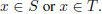

Yaniv Taigman, Adam Polyak & Lior Wolf
Facebook AI Research
Tel-Aviv, Israel
fyaniv,adampolyak,wolfg@fb.com
摘要
我们研究将一个领域中的一个样本转变成为另一个领域中一个相似的样本。假设有两个相关的领域，S和T，我们希望学到一个通用的函数G能够将S域中一个输入样本映射到T域，这样已经给定的函数f（同时接受两个域的输入样本）就能保持不变。除了函数f，训练数据是无标签的且由两个域中的样本组成的集合。
域转移网络（DTN），我们目前采用一种复合损失函数包括一个多类GAN损失函数，一个f-constancy（稳定性）组件和一个正则化组件，正则化组件能鼓励G将样本映射成样本原本的样子。我们将该方法应用到视觉领域包括数字识别以及脸部图像，说明了它能够生成令人信服的之前从未见过实体的抽象图片并且保持他们的特征。
1、介绍
人类擅于在相似领域或物体之间做出类比，转移元素从一个域到另一个并且使用这些能力来协调这些从多个源域产生的概念。我们的经验告诉我们，这些厉害的能力在已经给定了鲜明类别的监督学习中有的发展十分稀少。
近期的研究在某种程度上复制了一点这些功能：GANs能够生成令人相信的新奇样本（能够匹配给定的训练数据集）；风格转移方法能够改变图像的视觉风格；领域适应性方法能够一般化已学到的函数到新领域就算目标领域没有标好标签的样本，迁移学习现在都已普遍用于引进现存知识来使得学习过程更加高效。
然而，这些能力不能指定我们正在处理的一般性类比综合问题。也即是说，从域S和T中给定独立的或者无标签的样本以及函数f，去学习一个映射G: S -->T,例如f(x) ～f(G(x))。
为了解决这个问题，我们将赋予深度神经网络一个特殊的结构使得函数G是由输入函数f和一个学习函数g的组合。使用一个整合了多个条款的复合损失函数。一个条款是GAN条款（鼓励样本生成函数G(x)能根据目标域的训练样本生成难以分辨的样本)，不管。第二个损失条款逼迫对于每一个源域训练数据对 x，都使得 很小。第三个损失条款是正则化模块，能够鼓励G对所有
很小。第三个损失条款是正则化模块，能够鼓励G对所有 实现原有特征的映射。
实现原有特征的映射。
很小。第三个损失条款是正则化模块，能够鼓励G对所有实现原有特征的映射。我们集中解决视觉图像中的这类问题，尽管这种方法不仅仅局限于视觉问题甚至是感知类任务。特别的，为了分类或者提取特征，使用交叉熵损失函数使 f 成为神经网络代表作为已训练过的网络的激活函数。
作为主要应用挑战，我们选择处理根据给定的面部图像生成emoji这个问题。虽然现在emoji的热度高涨但是手工产生这种私人的emoji的巨大困难，在我们所知内没有系统能实现。我们的方法能生产视觉吸引的emoji并且能比人类熟练的设计师捕获更多的脸部特征。
2、相关工作
就我们所知，构想出的域迁移问题是很新奇的，即使是生态方面的（真实自然世界常出现），广泛应用的，联系到认知原因的（Fauconnier & Turner，2003）。接下来的讨论中，我们调查了近期的GAN工作，比较我们的工作与近期图像分析工作并使之联系非监督域适应性。
GAN（Goodfellow et al.，2014）方法训练一个生成器网络G，这个G会根据已经给予噪音向量的目标分配来合成样本。生成器网络G会连同鉴定器网络D一起得到训练（用于区分G生成的样本和目标分配的训练集）。G的目标就是生成样本让D识别为真实的原样本。
虽然GANs最初的理念是生成随机样本，它同样可以作为一个通用的工具用于测量各分配之间的等价程度。特别的，D的优化相当于让D变得能有更好的辨别能力，这样回头来说对每个D都有不能分辨的时候。
我们通常使用的结构是基于Radford et al. （2015）的成功结构。G产生的样本会有不均衡分布的问题，对于这个问题的担心日益增涨，因此人们倾向于聚合目标域的模式集合。总的来说，我们不观察对结果中产生的影响，因为生成样本的需求要满足特定的f-constancy（稳定性）准则。
一些成果（"Conditional GANs"）已经用于GANs为了从特定的类中生成样本（Mirza&Osindero，2014），甚至用于文本描述（Reed et al.,2016)。执行这种条件时，可以区分正确生成的样本。但未能匹配条件约束和未正确生成的样本。这是建模成一个三元判别函数D（Reed et al.，2016；Brock et al.，2016）。
Dosovitskiy & Brox（2016）最近的工作显示了显著的突破，他们在给定输入目标对的情况下，学习将映射嵌入到早准备的图像中。和我们一样，他们也使用GAN作为特征和像素空间中的额外损失。他们的方法能够反转AlexNet的中层激活并且重构输入图像。相反，我们解决了无监督域转移以及应用不同域的损失项中的问题：目标域中的像素损失，源域中的特征损失。
另一类非常有前途的生成技术最近获得了注意就是神经网络风格转换。在这些方法中，通过最小化内容loss来合成新的图像，关于一个输入样本和一个或多个输入样本的风格损失。内容损失通常发生在通过对图像分类任务的网络训练来对图像进行编码时，与我们的工作相似。样式损失比较了神经网络不同层中的激活的统计信息。我们的方法不采用样式损失。最初的风格转换是通过缓慢的优化过程实现（Gatys等，2016），最近，重点放在了前馈方法（乌里扬诺夫et al.，2016；约翰逊等，2016）。
风格转换和我们的工作之间有许多联系：两者都是无监督的，根据给定样本生成一个稳定性在f-constancy下的样本。然而，我们的工作更为普遍，这体现在范围广以及不依赖于预定义的家族感知元损失。我们的方法可以按顺序使用来进行风格转换，但不是反过来。另一个关键区别是现在的T风格转换方法的目标是复制一个或多个图像的风格，而我们的工作是考虑目标空间中的分布情况（连续的，无数的）。在许多应用中，有大量目标域T中未标记的数据，可以以无监督的方式精确地建模。
考虑到最近风格转换工作的令人印象深刻的结果，特别是对于人脸图像，人们可能会错觉得到的表情是不同风格的人脸绘画。用类推的方法，这一说法类似于说暹罗猫是一种不同风格的拉布拉多犬。Emoji相对于面部图片从内容和风格都不同。风格转换可以创造具有视觉吸引力的人脸图像。但是，目标域的属性被破坏了。
在计算机视觉文献中，已经完成了从图像中自动生成草图的工作，作为调查可以看Kyprianidis et al.（2013）。这些系统能够极具准确性地识别图像边缘和面部特征。然而，与我们的方法不同，它们需要匹配的样品对，并没有显示出能在两个遥远的域工作。由于缺乏有监督的训练数据，我们没有试图将这些方法应用于我们的问题。然而，可以假设，如果这种方法适合Emoji合成、自动人脸表情的服务将可用。
非监督域适应性说明了下面的问题：给定一个标签训练集在S x Y，对于一些目标空间Y，给定来自域T中的非标签样本集；学习到函数h：T --> Y（Chen et al.,2012;Ganin et al.,2016）。使用域适应性我们可以解决样本转化问题（我们的问题），反之亦然。在这两种情况下，解决方案都是间接的。为了使用域转化来解决域自适应，必须学习从S到Y的函数并使用它作为域转化算法的输入方法，以便获得从 的映射。然后，训练样本可以被转化成T并用于在那里学习分类器。
的映射。然后，训练样本可以被转化成T并用于在那里学习分类器。
的映射。然后，训练样本可以被转化成T并用于在那里学习分类器。在另一个方向上，给定函数f，可以通过生成训练样本（f(x),x）【任意x属于T】在域T中反转f，以及从 的转化过程中学习到函数h。然后域适应性可用于映射
的转化过程中学习到函数h。然后域适应性可用于映射 ，从而实现域转移。基于
，从而实现域转移。基于 的工作（2016），我们预计h，即使在Emoji的目标域，也很难得到，让这个方案处于假说阶段。
的工作（2016），我们预计h，即使在Emoji的目标域，也很难得到，让这个方案处于假说阶段。
的转化过程中学习到函数h。然后域适应性可用于映射，从而实现域转移。基于的工作（2016），我们预计h，即使在Emoji的目标域，也很难得到，让这个方案处于假说阶段。3、基线问题公式

第一项是对抗性风险，它要求对于每个判别函数D，来自目标域的样本与G根据源域生成的样本是无法区分的。对抗性风险不是唯一的选择。另一种替代说法是不使用GANs直接比较Dt分布和G(x)分布，其中 x ～ Ds，e.g.,使用 KL-divergence。
第二项是f-constancy项，它要求f在G下是不变的。实践中，我们已经尝试了多种形式的d，包括均方误差（MSE）和余弦距离，以及其他变种包括度量学习损失（铰链）和三元组损失。这个性能基本不变，我们使用最简单的MSE解决方案报告结果。


图1：域迁移网络。Losses用点线描绘，输入/输出用实现描绘。训练完后，前向模型G可被用于样本迁移。
4、域迁移网络
我们建议采用更精细的体系结构，其中包含两个高级修改。首先，我们使用f（x）作为函数G的基线表示。第二，在训练期间生成的样本G（x），x满足 。
。
。第一个变化被表示为G＝ ，对于一些已学到的函数g。通过它的应用，集中解决G的学习效率，学习努力ofgon是rconst最相关的方面。此外，在大多数应用程序中，
，对于一些已学到的函数g。通过它的应用，集中解决G的学习效率，学习努力ofgon是rconst最相关的方面。此外，在大多数应用程序中，
，对于一些已学到的函数g。通过它的应用，集中解决G的学习效率，学习努力ofgon是rconst最相关的方面。此外，在大多数应用程序中，f在T上的精度不如它在组合函数上的值，它是从两个样本上进行训练的。
s和t，在F上添加层，以适应它。